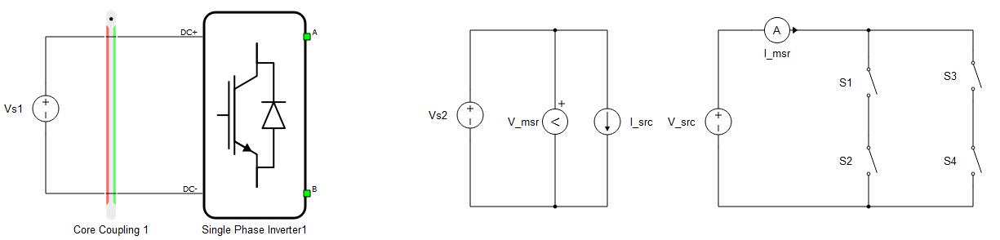
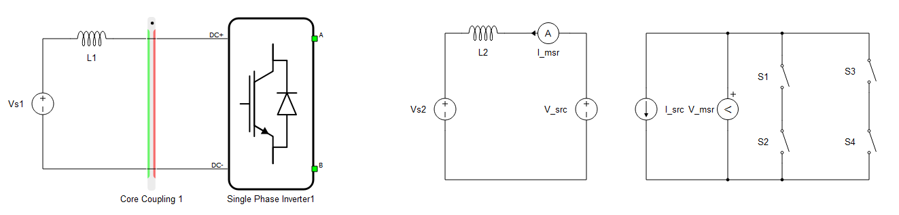
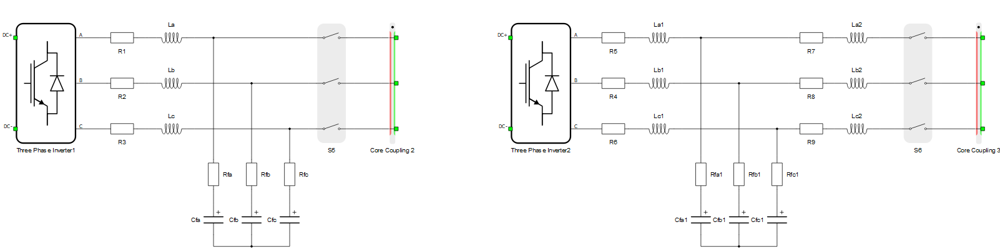
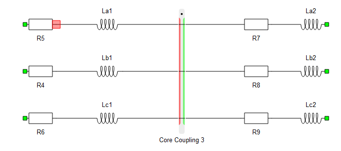
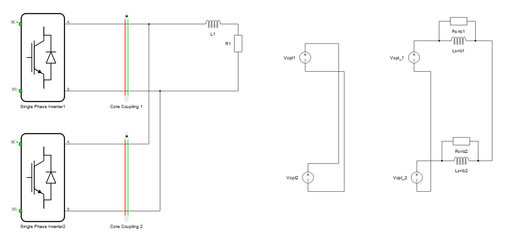
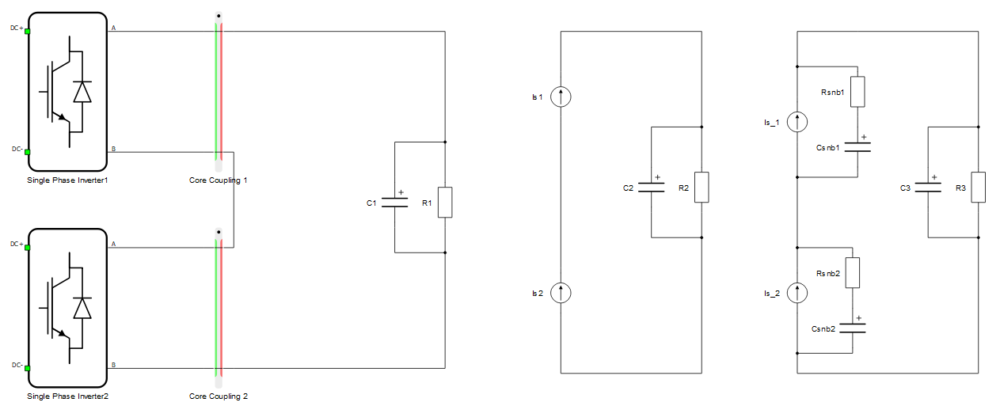

Snubber circuits parametrization in coupling components
This section explains how, when, and why to use snubber circuits in coupling components by looking at several different snubber topologies. Also, basic guidelines for snubber parametrization are given.
- Snubber circuit configuration:
- Resistor or series connection of a resistor and a capacitor on the current source side
- Resistor or parallel connection of a resistor and an inductor on the voltage source side
- Snubber type:
- Fixed - a snubber that is present during all circuit modes (switch permutations)
- Dynamic - a snubber that is dynamically added to circuit modes where topological conflicts are detected.
Choosing the right snubber type - dynamic or fixed
Snubbers are needed when a topological conflict is created by adding a coupling component to a circuit. Topological conflicts in the circuit can be present through all switch permutations, or only in several switch permutations. Topological conflicts that are always present are solved by fixed snubbers. Conflicts that are present only during specific permutation of the switches should be solved by dynamic snubbers. Here are some typical cases.
Example 1: The coupling in Figure 1 is a typical case of coupling at a capacitive DC link. Voltage sources and capacitors are seen as voltage source components. The topological conflict for this circuit will be reported on the green side of the coupling component. On the right side of Figure 1, the internal structure of the coupling and converter are shown. From this, we can see that the conflict occurs only when switches S1-S2 and/or S3-S4 are closed, which will cause that coupling’s voltage source to short circuit. To solve this conflict a dynamic snubber is recommended, since it is needed only in circuit modes where both switches in a phase leg are closed. Using a dynamic snubber during regular operation, will not present an additional error.

Example 2: The circuit shown in Figure 2 is an analog to the previous case. Now the current source side of the coupling is rotated towards the converter. On the right side of Figure 2, the internal structures of the coupling component and converter are shown. The topological conflict in this case occurs when the switches are open, and there is no path for the current from the coupling current source to flow through. This issue should be solved by a dynamic snubber if the circuit on converter side is capacitive. If it is inductive, the snubber should be fixed to avoid degenerations of inductors.

Example 3: This example represents two converters with different filter topologies and circuit breakers at their output shown in Figure 3. In first case, there is an L-C filter and a circuit breaker followed by a coupling component. The red, current source side of the coupling component is rotated towards the circuit breaker. We have a topology conflict only when switches of the circuit breaker are open (open switches in series with current sources). This should be solved by dynamic snubbers.
On the right side of the figure we have an L-C-L filter topology, followed by a circuit breaker and coupling. Also the current source side of the coupling component is rotated toward the breaker, meaning we have the same topology conflict as in the previous case, which can be addressed by dynamic snubbers. However, if the breaker is closed, we also have conflict with filter inductances connected in series with the current source of the coupling component. For this circuit, fixed snubbers are required, since the topology conflict is present through all the switch permutations.

Example 4: The circuit in Figure 4 represents a typical partitioning in a power systems circuit where we have inductances on both sides of coupling components. This is solved by adding fixed R-C snubbers.

Example 5: In Figure 5, outputs of the converters are connected in parallel. Due to inductive load, voltage source sides of the coupling are rotated towards the load. In this example, we have two voltage sources of the coupling components connected in parallel all the time. Fixed R||L sunbbers are needed. Dynamic snubbers would actually behave the same way as fixed snubbers since the conflict is always present.

Example 6: In Figure 6, outputs of the converters are connected in series. Due to a capacitive load, the current source sides of the coupling are rotated towards the load. In this example, we have two coupling component current sources connected in series all the time. Fixed R-C sunbbers are needed. Dynamic snubbers would actually behave the same way as fixed, since the conflict is always present.

Snubber parametrization
Parametrization of R-C and R||L snubbers are described in this section. There are two general rules for snubber parametrization:
- The time constant of R-C or R||L should be several time steps larger than the simulation step.
- The overall impedance of the snubber on the frequency of interest (usually 50/60Hz) should be sized to introduce small losses in the circuit, typically under 1%. This depends on the voltage level in the circuit and the total power that is transferred through the coupling component
It is important to note that the relative error introduced by the snubber depends on the overall power transferred through it. If the nominal power is transferred through the coupling, the snubber effect can be neglected, while if there is no power through the coupling, we will have a high relative error, since the only power flowing through is due to the snubber circuit.
The R-C snubber can be calculated using the following equation, with the main assumption that the capacitive part of the impedance on the frequency of interest is much larger than the resistive part:
where the variables are:
S – maximum power flowing through the coupling element [VA]
V – voltage level (line voltage) [V]
ω – network angular frequency (2πf) [rad/s]
k – snubber power as a fraction of maximum power (S) [-]; k=SSnubber/S typically k=0.1
C – snubber capacitance [F]
L – snubber inductance [H]
R – snubber resistance [Ω]
τ – snubber time constant [s] typically 10μs
If the calculated snubber induces instabilities, increase the capacitance twice, then recalculate resistance. This procedure is repeated until stability is achieved.
The same process should be followed for an R||L snubber, using the following equation instead:
Additional information and examples of IT Snubber Parameterization are available in our Video Knowledgebase and as part of the HIL Fundamentals course.